CS 180/280A - Introduction to Computer Vision and Computational Photography
This is my project portfolio.
Project 0: Becoming Friends with Your Camera
Part 1: Selfie: The Wrong Way vs. The Right Way

Wrong Way

Right Way
Part 2: Architectural Perspective Compression

Far + Zoom

Close
Part 3: The Dolly Zoom

My Nalgene, dolly zoomed
Project 1: Images of the Russian Empire: Colorizing the Prokudin-Gorskii photo collection
Overview
The Prokudin-Gorskii scans contained three grayscale exposures stacked vertically in BGR order. I split each scan into blue, green, and red channels, used blue as the fixed reference, and aligned green and red to it separately. Before alignment, I cropped 10% from each edge to reduce the effect of the glass-plate borders. After finding the best shifts, I applied them to the original uncropped channels and stacked the result in RGB order.
Normalized Cross-Correlation (NCC)
I used normalized cross-correlation (NCC) to score each candidate alignment. For the shifted channel and blue reference, I subtracted the mean from each comparison region and computed NCC = sum(A * B) / (||A|| ||B||). The shift with the highest NCC score was selected.
For each candidate, I shifted the moving channel with np.roll. I cropped the channels before alignment and excluded an additional margin when calculating NCC to reduce the effect of border and wrapped pixels on the score.
Single-Scale Alignment
For the smaller JPEG images, I used an exhaustive search over possible row and column displacements. Green and red were aligned independently to blue, and each candidate shift was evaluated using NCC. This same single-scale alignment procedure was also used at each level of the image pyramid. The shift with the highest score was then applied to the original channel. The offsets below are shown in (row, column) order.

Cathedral
Green offset: [x, y]
Red offset: [x, y]

Monastery
Green offset: [x, y]
Red offset: [x, y]

Tobolsk
Green offset: [x, y]
Red offset: [x, y]
Multi-Scale Pyramid Alignment
The TIFF images were much larger, so I used an image pyramid to make the alignment search more efficient. At each level, I blurred the channel with a 3 × 3 averaging filter and downsampled it by taking every other row and column. I continued until the image had been reduced to about 7% of its original size or another reduction would have made one dimension smaller than 64 pixels.
Alignment began at the smallest level with a search around (0, 0). The initial search radius was based on 10% of the smaller image dimension and limited to between 5 and 15 pixels. At each higher-resolution level, I doubled the previous shift to account for the change in scale and refined it within a 4-pixel search radius. I repeated this separately for green and red, then applied the final shifts to the original uncropped channels.

Church
Green offset: [x, y]
Red offset: [x, y]

Emir
Green offset: [x, y]
Red offset: [x, y]

Harvesters
Green offset: [x, y]
Red offset: [x, y]
Icon
Green offset: [x, y]
Red offset: [x, y]

Ilemtselga
Green offset: [x, y]
Red offset: [x, y]

Melons
Green offset: [x, y]
Red offset: [x, y]

Religious Painting
Green offset: [x, y]
Red offset: [x, y]

Self Portrait
Green offset: [x, y]
Red offset: [x, y]

Siren
Green offset: [x, y]
Red offset: [x, y]

Three Generations
Green offset: [x, y]
Red offset: [x, y]

Wharf
Green offset: [x, y]
Red offset: [x, y]
Alignment Failure
Emir was the least accurate result. The algorithm found a green shift of (49, 24) and a red shift of (86, 43), but some color fringing remained around high-contrast edges. A likely cause was that corresponding regions had noticeably different intensities across the color exposures. Mean subtraction and normalization helped account for overall brightness differences, but raw-pixel NCC could still struggle when corresponding pixels differed substantially between color channels.
Images of My Choosing
I also applied the same alignment procedure to three additional images from the Prokudin-Gorskii collection.

Railroad
Green offset: [x, y]
Red offset: [x, y]

Towers
Green offset: [x, y]
Red offset: [x, y]

Peonies
Green offset: [x, y]
Red offset: [x, y]
Project 2: Fun with Filters and Frequencies!
Part 1.1: Convolutions from Scratch
I implemented convolution in two ways. My first implementation uses four nested loops: two loops iterate over each output pixel, while the other two iterate over every element of the filter. My second implementation uses only two loops over the image and uses NumPy operations to multiply and sum each local image region with the filter.
In both implementations, I flip the kernel before applying it and add zero padding around the input image. The amount of padding is chosen so that the output has the same dimensions as the original image. Pixels near the image boundary therefore use zeros wherever the filter extends beyond the original image.
Four-Loop Convolution
def convolve_four_loops(image, kernel):
flipped_kernel = np.flip(kernel)
kernel_rows = len(kernel)
kernel_cols = len(kernel[0])
pad_top = kernel_rows // 2
pad_bottom = kernel_rows - 1 - pad_top
pad_left = kernel_cols // 2
pad_right = kernel_cols - 1 - pad_left
img_same = np.pad(
image,
((pad_top, pad_bottom), (pad_left, pad_right)),
mode='constant',
constant_values=0
)
new_img = np.zeros((len(image), len(image[0])))
for row in range(len(image)):
for col in range(len(image[0])):
total = 0
for filter_row in range(kernel_rows):
for filter_col in range(kernel_cols):
total += (
img_same[row + filter_row, col + filter_col]
* flipped_kernel[filter_row, filter_col]
)
new_img[row, col] = total
return new_imgTwo-Loop Convolution
def convolve_two_loops(image, kernel):
flipped_kernel = np.flip(kernel)
kernel_rows = len(kernel)
kernel_cols = len(kernel[0])
pad_top = kernel_rows // 2
pad_bottom = kernel_rows - 1 - pad_top
pad_left = kernel_cols // 2
pad_right = kernel_cols - 1 - pad_left
img_same = np.pad(
image,
((pad_top, pad_bottom), (pad_left, pad_right)),
mode='constant',
constant_values=0
)
new_img = np.zeros((len(image), len(image[0])))
for row in range(len(image)):
for col in range(len(image[0])):
neighborhood = img_same[
row:row + kernel_rows,
col:col + kernel_cols
]
new_img[row, col] = np.sum(
neighborhood * flipped_kernel
)
return new_imgComparison with scipy.signal.convolve2d
I compared both implementations against
scipy.signal.convolve2d using the same kernel,
zero-filled boundaries, and mode="same". I used
np.allclose to compare the resulting arrays, and both
implementations matched the SciPy result.
The four-loop implementation is the slowest because every individual
filter multiplication and addition is performed inside Python loops.
The two-loop implementation is faster because the operations within
each neighborhood are handled by NumPy. SciPy's
convolve2d is much faster than either implementation
because the convolution is performed by optimized library code.
9 × 9 Box Filter and Finite Difference Filters
I converted an image of myself to grayscale and created a 9 × 9 box
filter with every entry equal to 1/81. Convolving with
this filter replaces each pixel with an average of its surrounding
neighborhood, producing a blurred image. I also convolved the image
with the finite difference filters
Dx = [-1, 1] and
Dy = [-1, 1]^T to measure intensity changes in the two
directions.
D_x = np.array([[-1, 1]])
D_y = np.array([[-1], [1]])
box_filter = np.ones((9, 9)) / 81
self_blurred = convolve_two_loops(self_image, box_filter)
self_x = convolve_two_loops(self_image, D_x)
self_y = convolve_two_loops(self_image, D_y)
Original grayscale image

9 × 9 box filter

Dx

Dy
SciPy Convolution Results
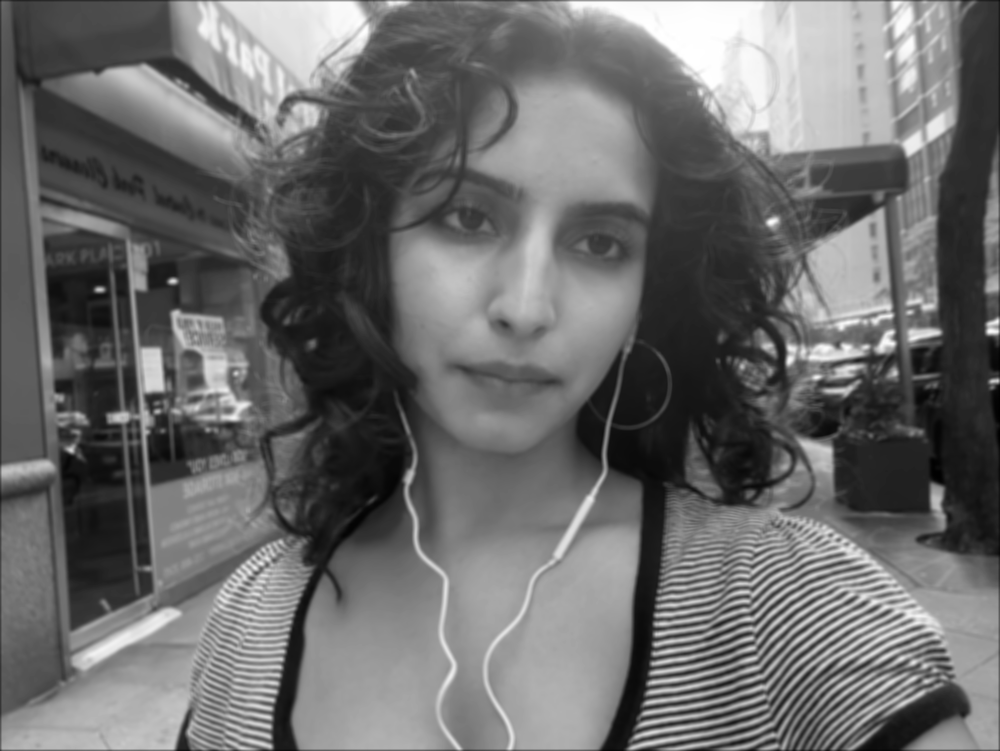
9x9 Box Filter
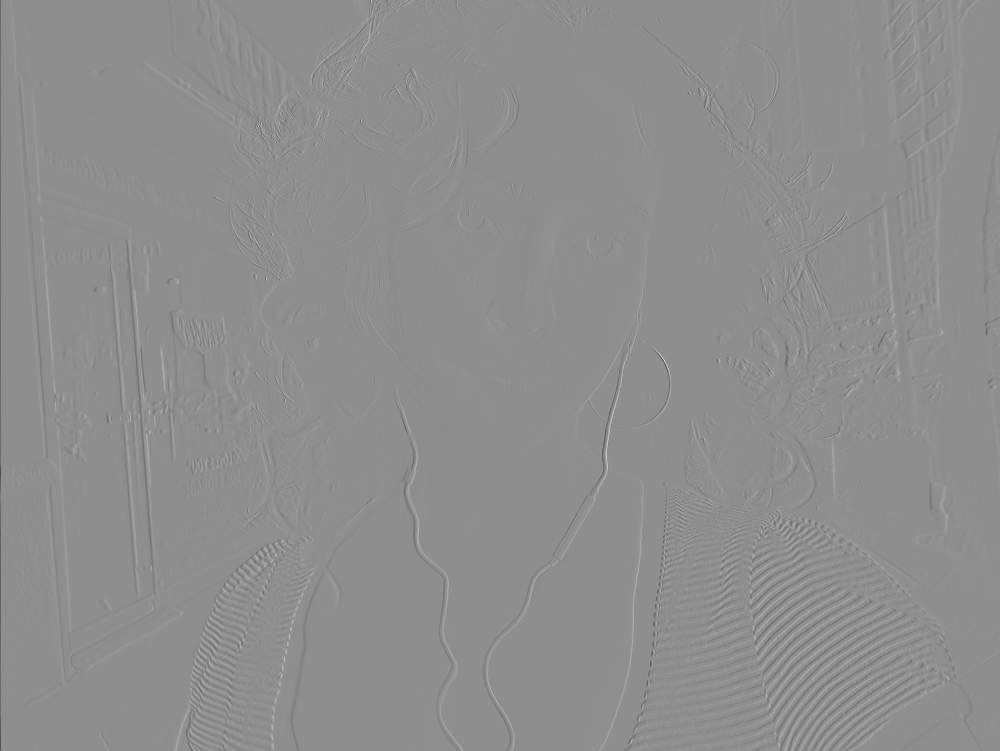
Dx

Dy
Comparison and Runtime
I compared both of my convolution implementations with
scipy.signal.convolve2d using the same zero padding.
Both custom implementations matched the SciPy result using
np.allclose. My four-loop implementation took about
156.19 seconds, while my two-loop implementation took about
23.32 seconds. The two-loop implementation is faster because it
replaces the inner Python loops with NumPy array operations.
SciPy's optimized implementation was much faster than both,
taking about 0.72 seconds.
At the image boundaries, all three implementations use zero padding. Pixels outside the image are treated as zero, which allows the output to remain the same size as the input.
Part 1.2: Finite Difference Operator
I convolved the cameraman image with the finite difference filters
Dx = [-1, 1] and Dy = [-1, 1]^T
to measure intensity changes in the x and y directions. I then
computed the gradient magnitude at each pixel using
sqrt(Dx² + Dy²), which combines the responses from
both directions into a single measure of edge strength.
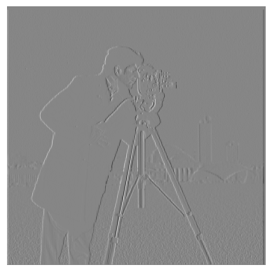
Partial derivative in x
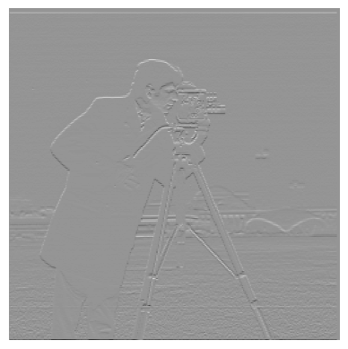
Partial derivative in y
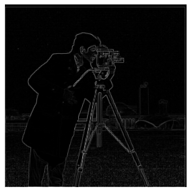
Gradient magnitude
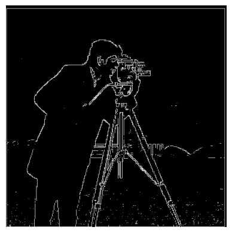
Binary edges, threshold = 55
To produce the binary edge image, I thresholded the gradient magnitude at 55. This keeps the stronger edges around the photographer, camera, and tripod while suppressing much of the weaker texture in the ground and background. The tradeoff is that some weaker edges are removed along with the noise.
Part 1.3: Derivative of Gaussian Filter
The finite difference results from Part 1.2 contain a lot of
high-frequency detail and noise. To reduce this, I first smoothed
the cameraman image with a Gaussian filter. I created a 1D Gaussian
using cv2.getGaussianKernel(9, 2) and took its outer
product with its transpose to create a 2D Gaussian filter.
Gaussian Smoothing
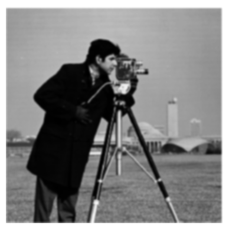
Gaussian blurred image
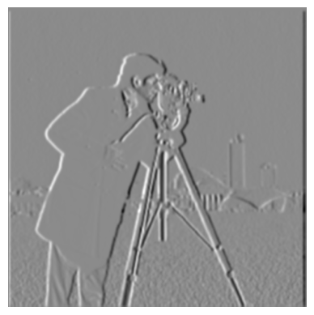
Dx after smoothing

Dy after smoothing

Gradient magnitude after smoothing
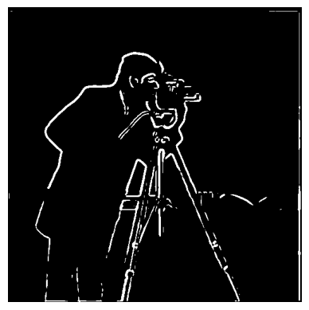
Binary edges, threshold = 20
Compared with the finite difference results from Part 1.2, Gaussian smoothing removes much of the small high-frequency variation before differentiation. The resulting edges are smoother and the binary edge image contains less background texture, while the major outlines of the photographer, camera, and tripod remain visible. I used a threshold of 20 after smoothing because the Gaussian filter reduces the strength of the derivative responses.
Derivative of Gaussian Filters
Instead of first smoothing the image and then taking its derivative,
I combined the two operations into a single filter. I convolved the
Gaussian filter with Dx and Dy to produce
derivative-of-Gaussian filters, then convolved the original cameraman
image directly with those filters.
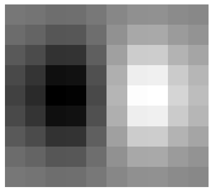
DoG x filter
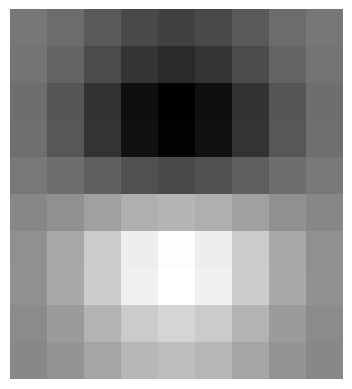
DoG y filter

DoG x derivative
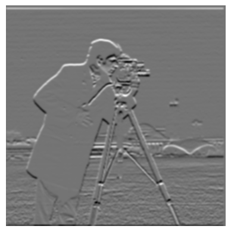
DoG y derivative
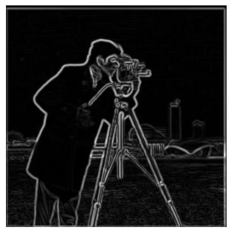
DoG gradient magnitude

DoG binary edges, threshold = 20
The direct DoG method produces essentially the same result as first
applying the Gaussian filter and then applying the finite difference
operators. The maximum absolute difference between the two gradient
magnitude images was approximately 2.347011474057581e-13, which is
effectively zero apart from floating-point precision.
Part 2.1: Image Sharpening
To sharpen an image, I used a Gaussian filter to isolate its
low-frequency content. Subtracting the blurred image from the
original gives the high-frequency component:
high frequencies = image - blurred image.
I then added a scaled version of these high frequencies back to
the original image:
sharpened = image + α(high frequencies).
Combining these operations gives
sharpened = (1 + α)image - α(blurred image).
This can be written as a single unsharp-mask filter
(1 + α)I - αG, where I is the
identity filter and G is the Gaussian filter.
I used a 9 × 9 Gaussian with σ = 2 and applied the resulting
filter independently to each color channel.
Taj Mahal

Original
Gaussian blur
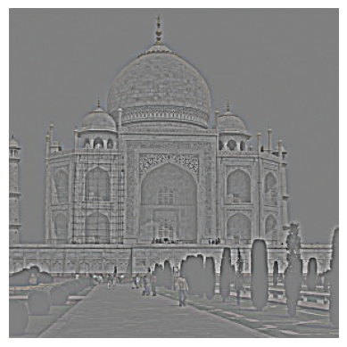
High-frequency component
Sharpened, α = 1
The high-frequency image contains the fine edges and details that are removed by the Gaussian blur. For visualization, I shifted the high-frequency values by 128 so that both positive and negative responses can be seen around a middle gray value.
Varying the Sharpening Amount
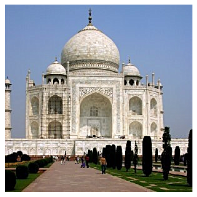
α = 0.5
α = 1
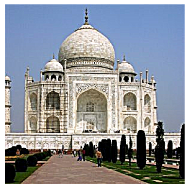
α = 2
α = 4
Increasing α gives more weight to the high-frequency component. At α = 0.5 the sharpening is relatively subtle, while α = 2 and α = 4 make edges and fine details much more pronounced. At the largest value, the sharpening begins to look more exaggerated because high-frequency contrast is being amplified strongly.
Another Image
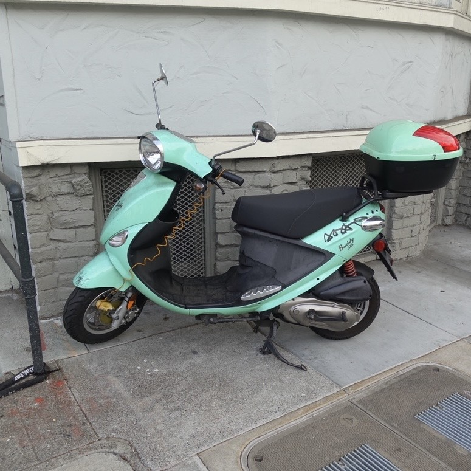
Original
Gaussian blur
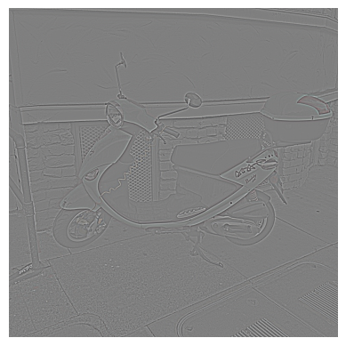
High-frequency component
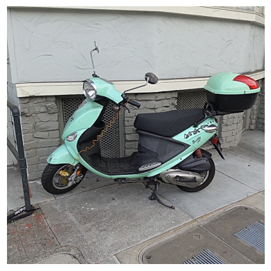
Sharpened, α = 1
The same process also sharpens my own image. The high-frequency component emphasizes boundaries such as the edges of the scooter, wheels, pavement, and wall, and adding those frequencies back makes those details more pronounced.
Varying the Sharpening Amount on My Image
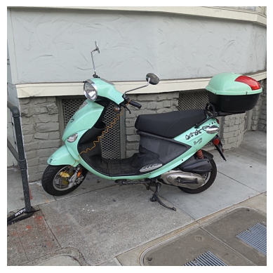
α = 0.5
α = 1
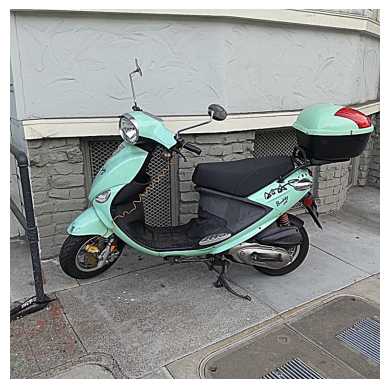
α = 2
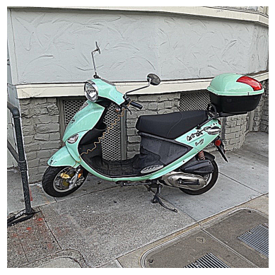
α = 4
The same pattern appears on my own image. Increasing α strengthens the high-frequency detail, making boundaries and texture more pronounced. The lower values give a subtler sharpening effect, while the larger values produce much stronger edge contrast.
Blur Then Resharpen
To evaluate the method, I started with the original sharp scooter image, deliberately blurred it with a Gaussian filter, and then applied the unsharp mask to the blurred result.
Original sharp image
Blurred image
Resharpened image
Resharpening strengthens the remaining edges in the blurred image, but it does not fully recover the original sharp image. Information that was removed by the blur cannot be recreated simply by amplifying the frequencies that remain, so the resharpened result still appears softer than the original.
Part 2.2: Hybrid Images
Hybrid images combine the high-frequency content of one image with the low-frequency content of another. Up close, the high-frequency image is more visible, while from farther away the low-frequency image becomes more dominant. I aligned each pair before filtering, used Gaussian blur for the low-pass component, and computed the high-pass component by subtracting a Gaussian-blurred image from the original.
Derek + Nutmeg
Nutmeg supplies the high-frequency component and Derek supplies the
low-frequency component. I used a Gaussian standard deviation of
0.007 × min(image dimensions) for the high-pass filter
and 0.02 × min(image dimensions) for the low-pass
filter.

Derek — low frequencies

Nutmeg — high frequencies
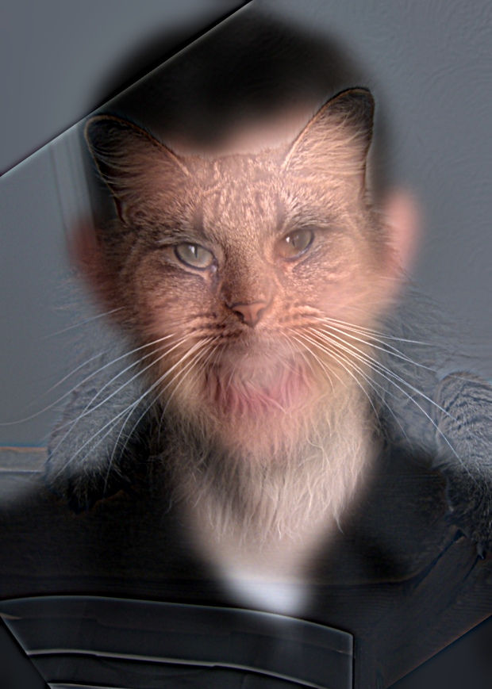
Derek + Nutmeg hybrid
Natalia + Timothée
Natalia supplies the high-frequency component and Timothée supplies
the low-frequency component. I used
σ = 0.003 × min(image dimensions) for the high-pass
component and
σ = 0.015 × min(image dimensions) for the low-pass
component.
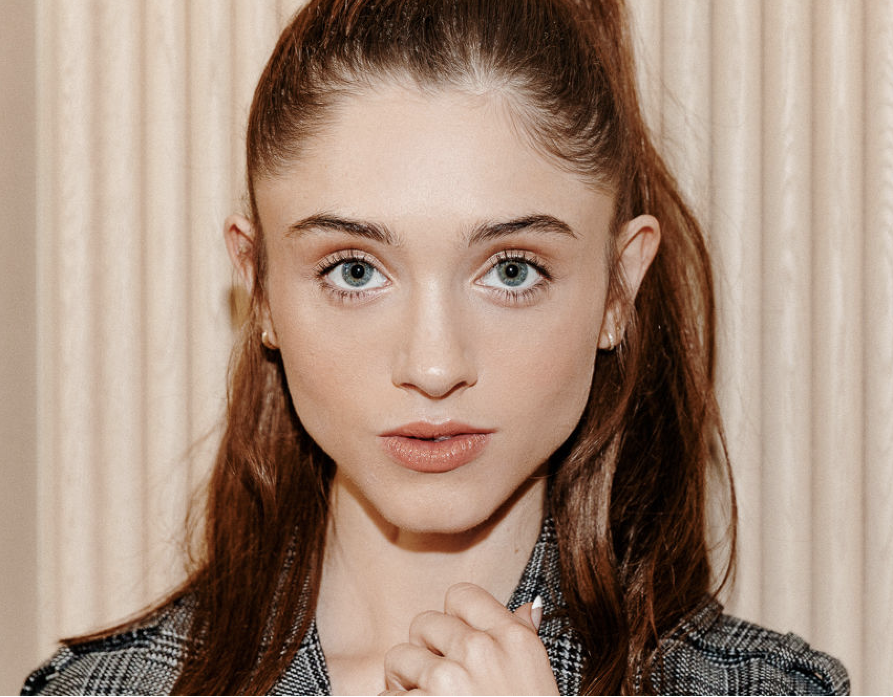
Natalia — high frequencies
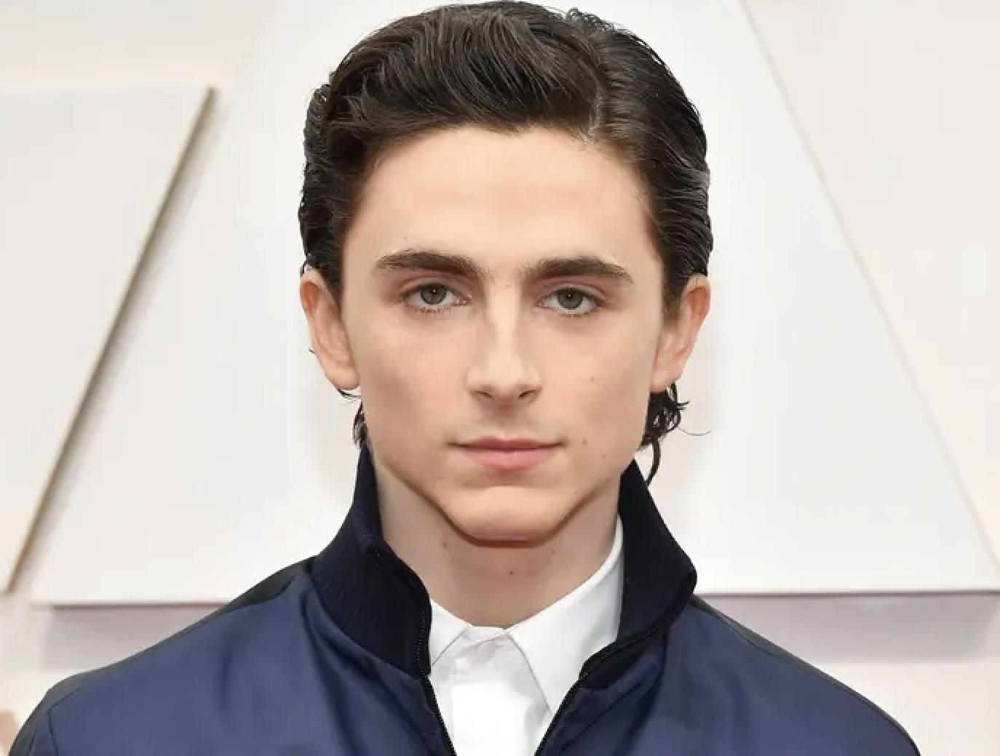
Timothée — low frequencies
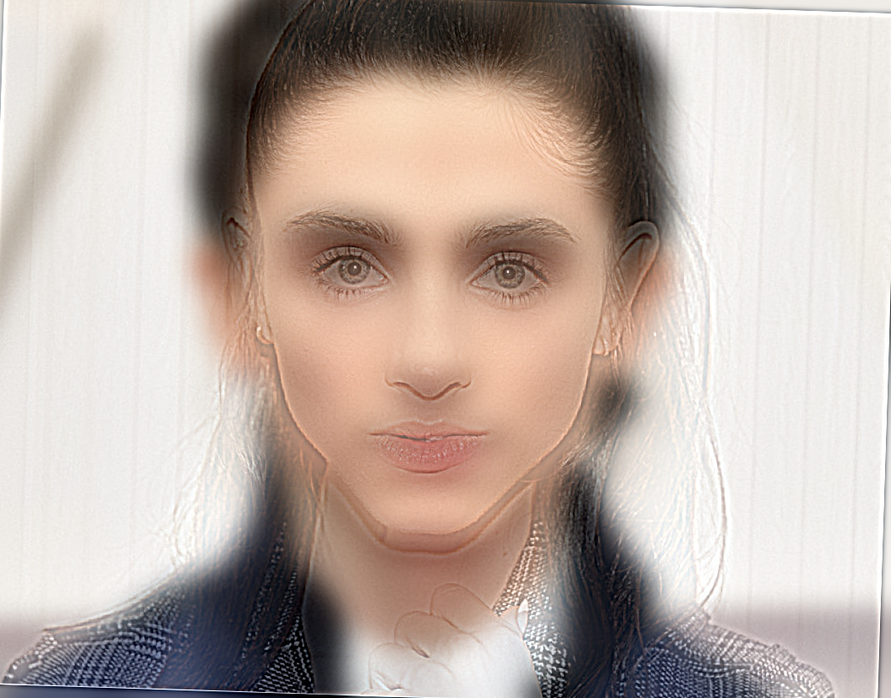
Natalia + Timothée hybrid
Basketball + Orange: Full Frequency Analysis
For my full frequency analysis, the basketball supplies the
high-frequency component and the orange supplies the low-frequency
component. I used
σ = 0.004 × min(image dimensions) for the high-pass
component and
σ = 0.02 × min(image dimensions) for the low-pass
component.
Original and Aligned Images
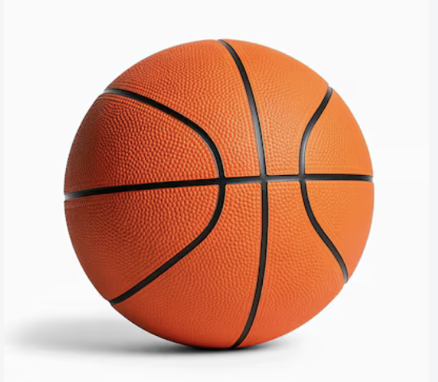
Original basketball
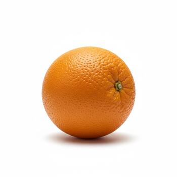
Original orange
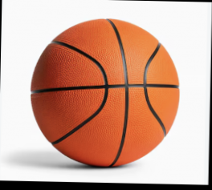
Aligned basketball
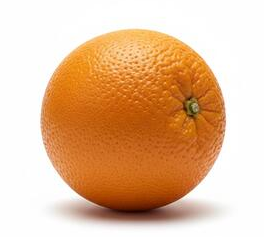
Aligned orange
Filtered Images
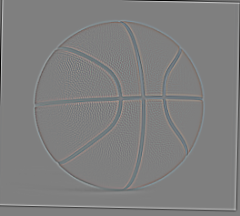
High-pass basketball
Low-pass orange
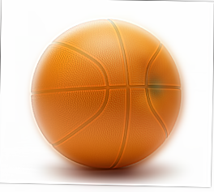
Final hybrid
Fourier Analysis
I visualized the frequency content using the log magnitude of the 2D Fourier transform. The low-pass orange concentrates frequency content near the center of the spectrum, while the high-pass basketball suppresses the lowest frequencies near the center. The final hybrid contains frequency information from both components.
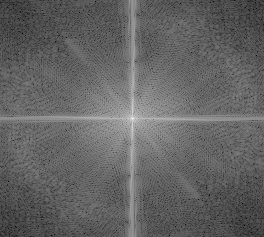
Basketball FFT
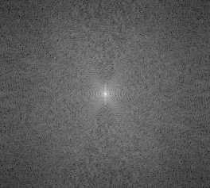
Orange FFT
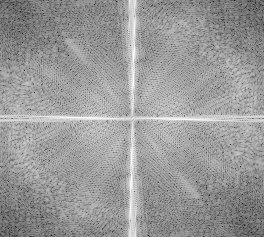
High-pass basketball FFT
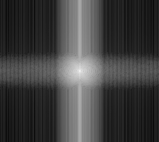
Low-pass orange FFT
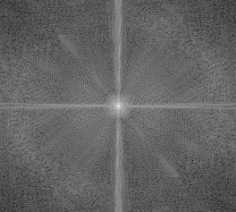
Hybrid FFT
Part 2.3: Gaussian and Laplacian Stacks
I implemented Gaussian and Laplacian stacks without downsampling, so every level remains the same size as the original image. For the Gaussian stack, each level applies a progressively stronger Gaussian blur. I used six levels total.
I then constructed the Laplacian stack by subtracting adjacent Gaussian levels. This isolates the band-pass information at each level, while the final level keeps the lowest-frequency residual.
Apple Gaussian Stack
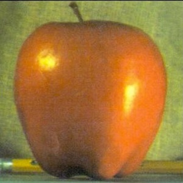
Level 0
Level 1
Level 2
Level 3
Level 4
Level 5
Orange Gaussian Stack
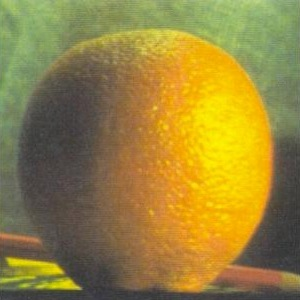
Level 0
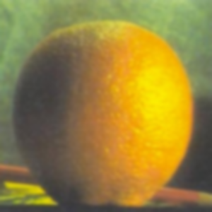
Level 1
Level 2
Level 3
Level 4

Level 5
Apple Laplacian Stack
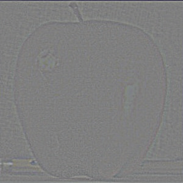
Level 0
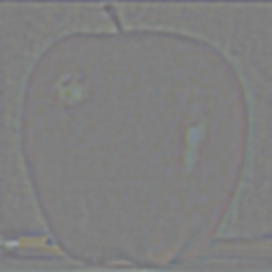
Level 1
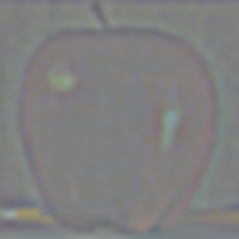
Level 2
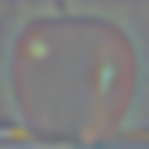
Level 3
Level 4

Level 5
Orange Laplacian Stack
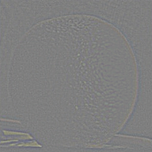
Level 0
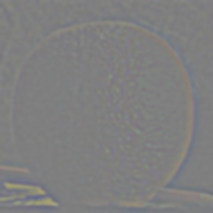
Level 1
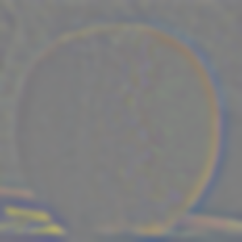
Level 2
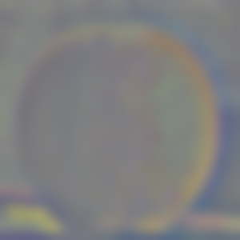
Level 3
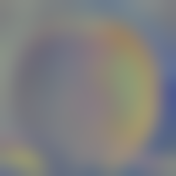
Level 4
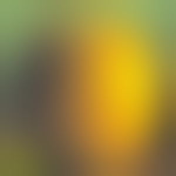
Level 5
Recreation of Figure 3.42
To recreate Figure 3.42, I used levels 0, 2, and 4 from the stack along with the masked apple, masked orange, and final blended result.
(a) Apple, level 0
(b) Orange, level 0
(c) Blend, level 0
(d) Apple, level 2
(e) Orange, level 2
(f) Blend, level 2
(g) Apple, level 4
(h) Orange, level 4
(i) Blend, level 4
(j) Masked Apple
(k) Masked Orange
(l) Final Oraple
Part 2.4: Multiresolution Blending
For multiresolution blending, I constructed Laplacian stacks for both input images and a Gaussian stack for the mask. At each level, I used the Gaussian mask to combine the corresponding Laplacian levels, then summed the blended levels to reconstruct the final image. Blurring the mask at different frequencies allows the transition between the two images to happen gradually instead of creating a sharp seam.
Apple + Orange
I first tested the method on the Apple and Orange images using a vertical step mask. The left half of the mask selects the Apple and the right half selects the Orange. The Gaussian stack of this mask creates progressively smoother transitions at lower frequencies. The detailed Laplacian-stack process for this blend is shown above in my recreation of Figure 3.42.

Apple

Orange
Vertical mask

Oraple
White Moon + Pink Moon
For my first custom blend, I combined two moon images using another vertical mask. Both images were resized to the same dimensions before constructing their Laplacian stacks.
White Moon
Pink Moon
Vertical mask
Final blend
Orange Basketball — Irregular Mask
For my irregular-mask example, I replaced the basketball in the original image with an orange. Instead of a straight dividing line, I used a circular mask positioned over the basketball. The same Gaussian-mask and Laplacian-stack procedure blends the orange into the selected region while keeping the rest of the original image.
Original image
Orange image
Irregular mask
Final blend
What I Learned
The biggest thing I learned from this project was how much of image processing comes down to working with different frequencies. It was cool seeing the same idea show up in sharpening, hybrid images, and blending, just used in different ways. I also got a much better understanding of how Gaussian and Laplacian stacks can separate out different levels of detail and make blends look way smoother.